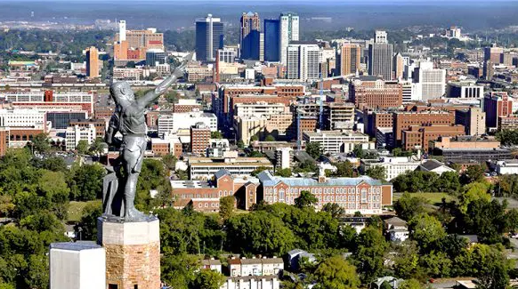

Located in central Alabama, Birmingham is a city with a robust industrial heritage and historicl importance in the Civil Rights Movement. Its economic resilence is reflected in a diverse business landscape. Birmingham is home to the McWane Center that will certainly peak your interest with science based attractions. The city also has a vibrant culinary scene as well. Birmingham stands as a prominent urban center, balancing its historical significance with modern development.
